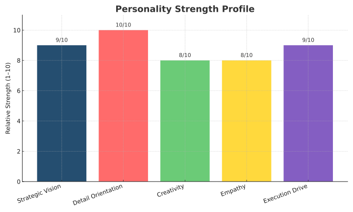

為何建立這個平台
孩子常常需要先有簡單的情緒語言，才有能力開口求助。Healthy Little Minds 將情緒與行為概念轉化為友善的書籍、學習單、安定工具與家庭指引。
目標很實際：讓家庭與學校更容易開始安全而有支持感的情緒對話。
孩子常常需要先有簡單的情緒語言，才有能力開口求助。Healthy Little Minds 將情緒與行為概念轉化為友善的書籍、學習單、安定工具與家庭指引。
目標很實際：讓家庭與學校更容易開始安全而有支持感的情緒對話。
我結合臨床心理學訓練、結構化研究與創意教育設計，製作溫暖、實用並符合年齡需求的資源。

形塑這項工作的學習、教學與研究經驗。
畢業於 Philippine Christian University，獲最佳大學論文獎，並有三年學生聯盟領導經驗。
於 St. Clare's Medical Center 參與初談、精神狀態觀察、督導與心理教育講座。
就讀 Far Eastern University，進一步學習評估、心理治療、異常心理學與論文發展。
於 Exalt Psychological Clinic and Consultancy 進行臨床訪談、心理計量測驗、認知行為取向工作與進度紀錄。
研究馬尼拉特定學校青少年的物質使用與行為障礙。
我研究青少年的行為風險與韌性，再將洞察轉化為家庭和教室容易採用的工具。
一項通過倫理審查的研究，探討來自功能失調家庭的菲律賓青少年之物質濫用與行為障礙，旨在支持介入方案規劃。
以標準化測量分析 135 名青少年，了解物質使用模式及行為風險指標。
故事、可列印教材、音訊體驗與家長指南，將困難的情緒概念轉化為支持性的對話。
與學習、行為和心理健康相關的學術作品及持續研究。
來自訓練、臨床實習、社區服務與教育工作的紀錄。
若您有合作、學校方案、資源問題或專業諮詢需求，歡迎聯絡。